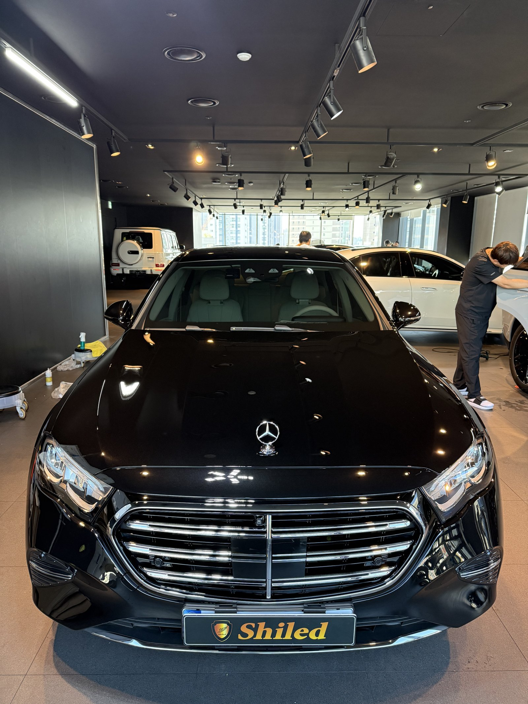
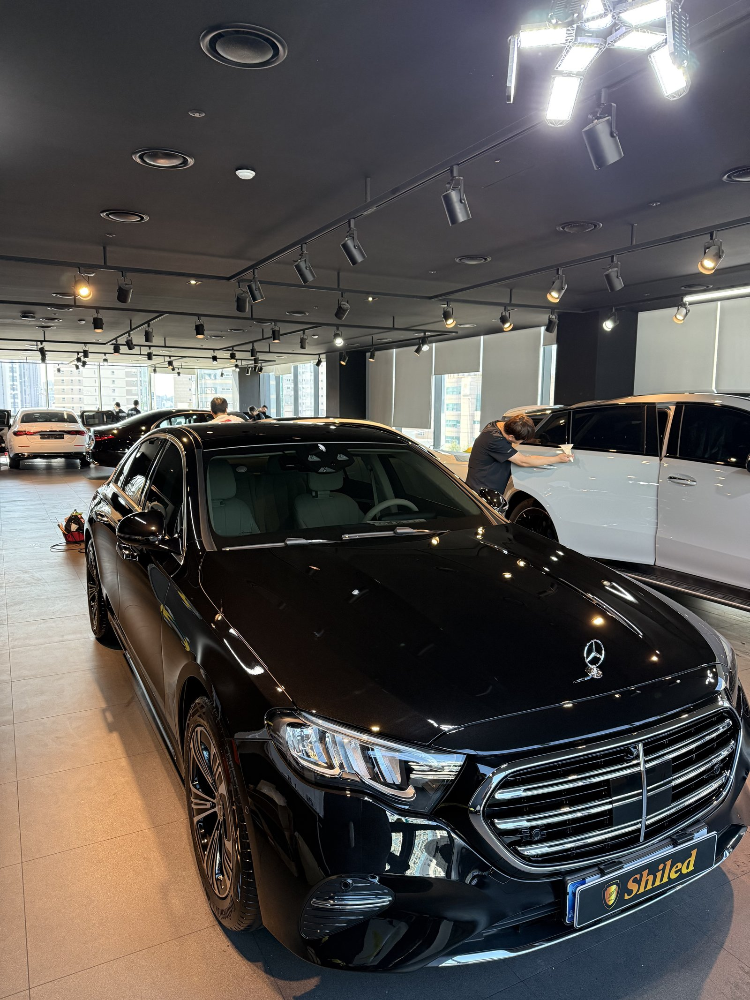
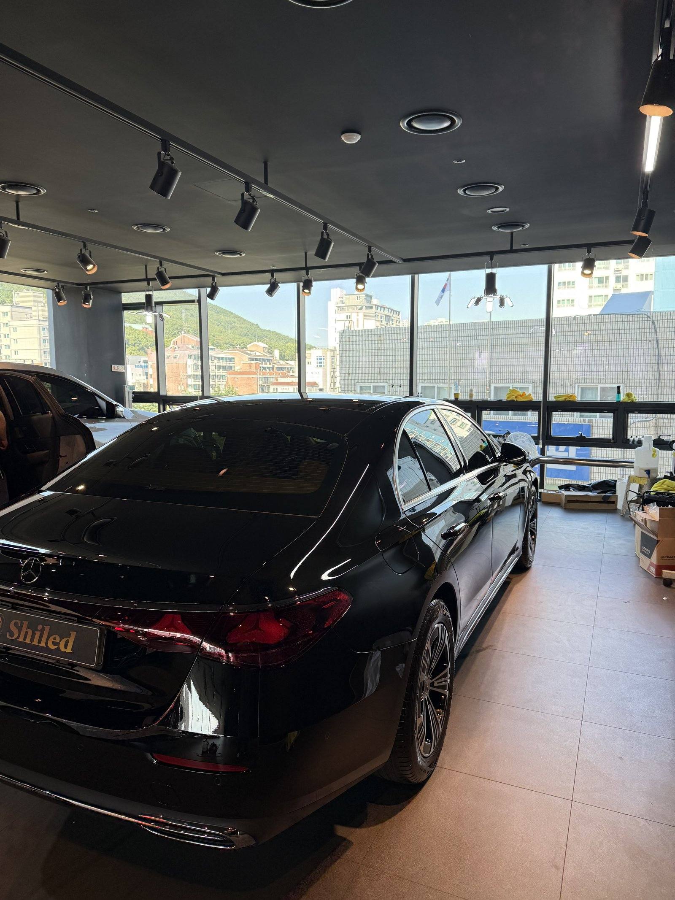
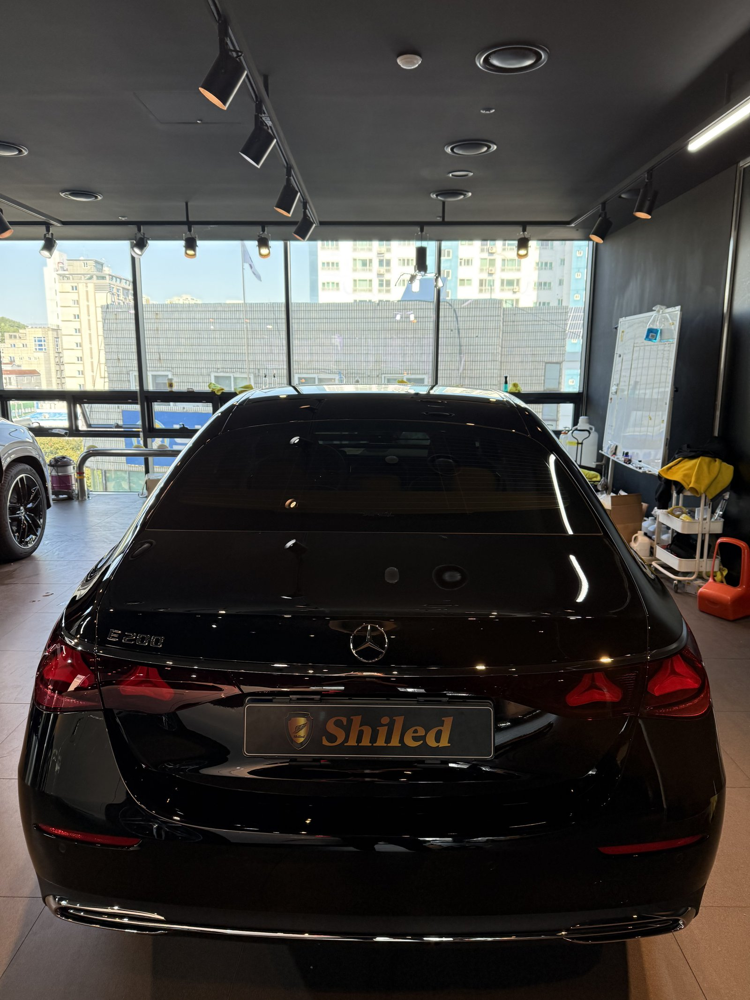
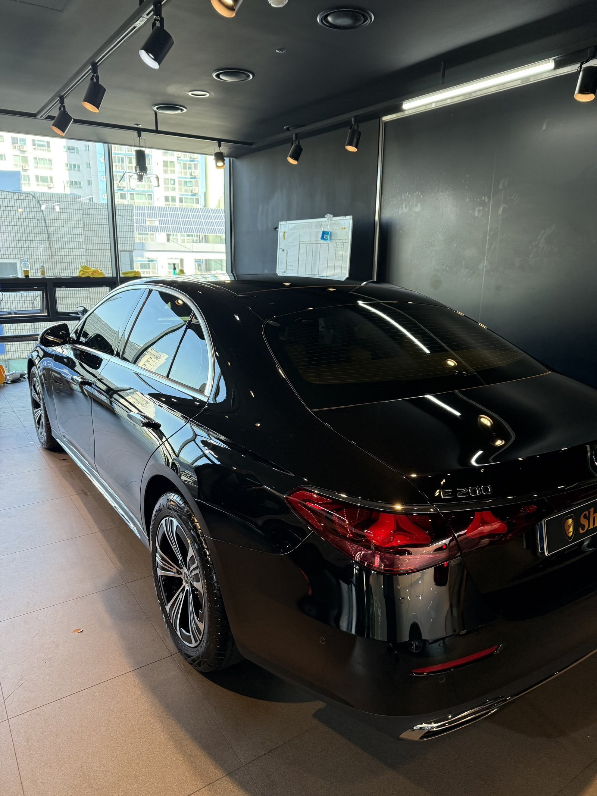
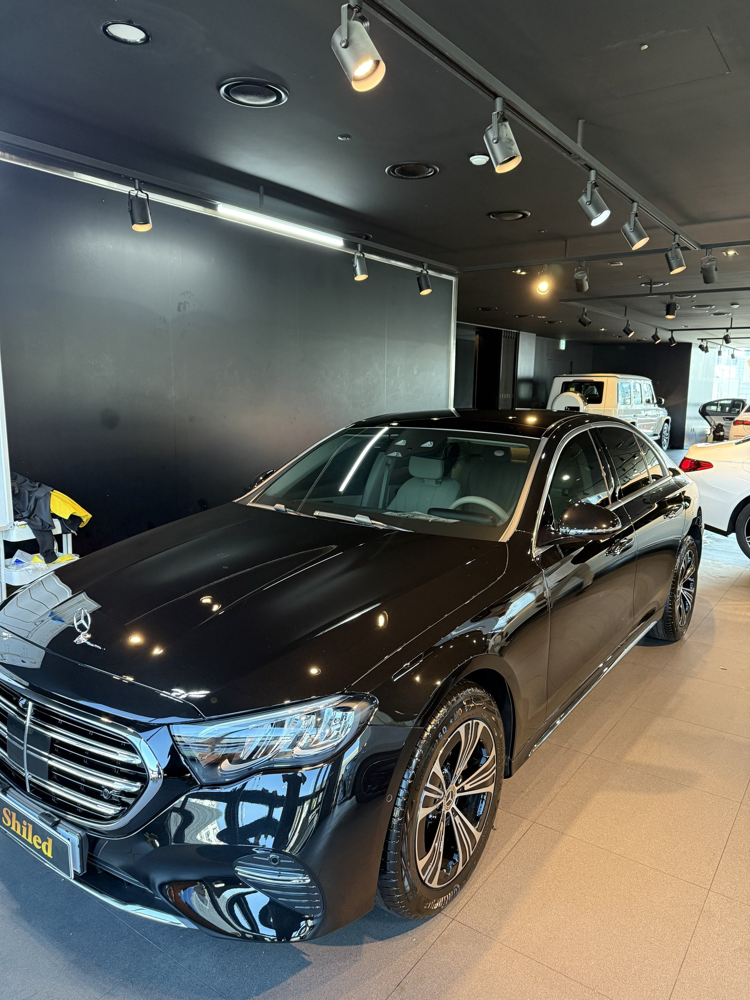
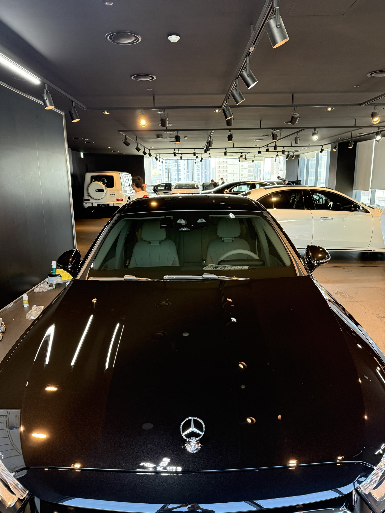
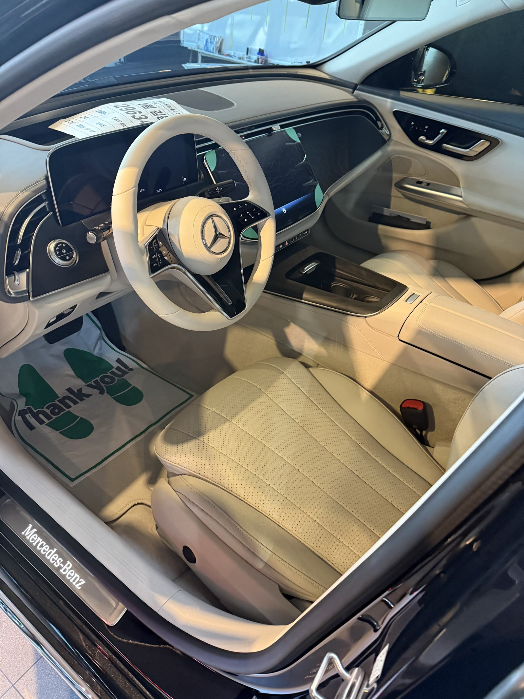
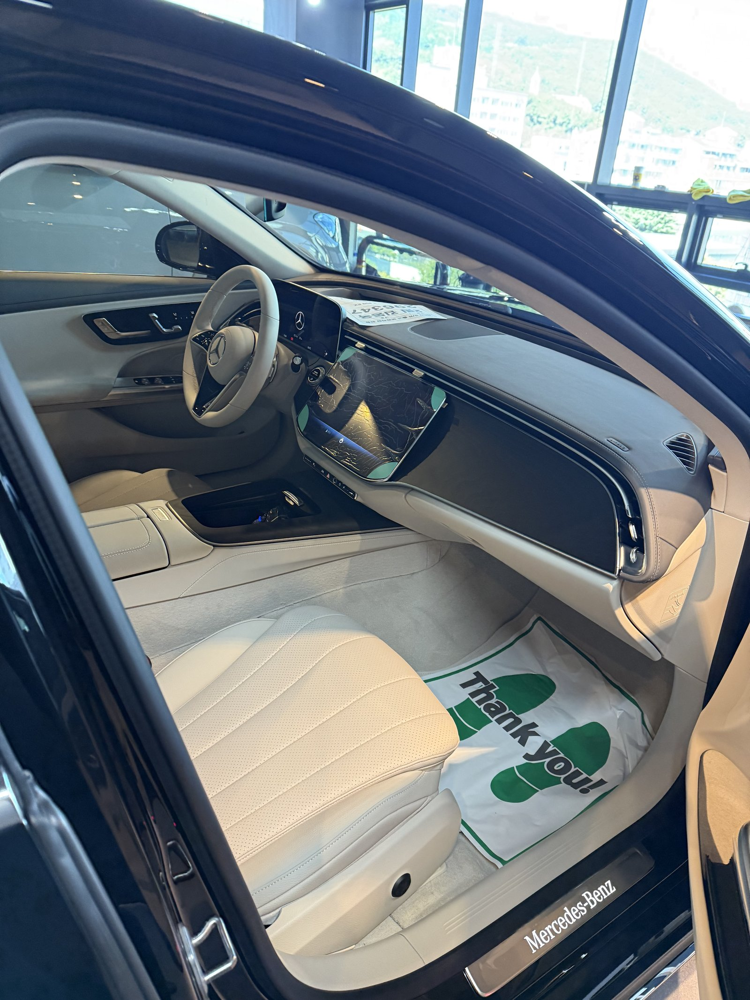
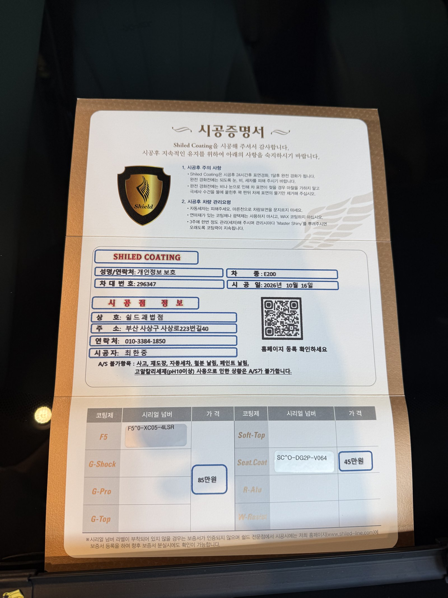

벤츠 E200 익스클루시브, 검정 신차입니다.
실내는 아이보리 톤입니다.
그래서 이번에는 외장 코팅에 시트코팅까지 함께 진행했습니다.
부산 유리막코팅 작업의 E200 EX 기록입니다.

검정 신차는 왜 출고 전에 코팅하나요?
검정은 첫 세차부터 흔적이 남는 색입니다.
잔기스가 생기기 전에 보호막을 올려두는 것이 핵심입니다.
도장면이 가장 깨끗한 지금이 시작점입니다.


검정 E200 EX에 F5를 올린 이유
F5는 색감의 깊이와 글로시함에 특화된 코팅입니다.
검정은 광이 깊을수록 크롬 그릴과 차체가 함께 살아납니다.
이번 부산 유리막코팅도 F5로 진행했습니다.
코팅제는 대표가 직접 개발·제조한 제품입니다.




아이보리 시트에 시트코팅을 더한 이유
밝은 가죽은 이염이 가장 먼저 옵니다.
청바지 물, 가방 끈 자국이 운전석 볼스터부터 스며듭니다.
시트코팅은 그 오염이 가죽 안으로 배어들기 전에 막는 역할을 합니다.
외장은 F5, 실내는 시트코팅으로 안팎을 같이 챙겼습니다.
기술자의 팁
시트코팅을 해도 이염을 오래 두면 닦기 어려워집니다. 볼스터에 푸른 기가 보이면 마른 극세사 타월로 그날 바로 닦아 주십시오.


시공증명서를 함께 드립니다
모든 시공 차량에 시공증명서를 드립니다.
차종·시공일·코팅제 시리얼 번호가 적혀 있고, 홈페이지에 등록해 보증을 받으실 수 있습니다. 이 차는 F5와 시트코팅으로 기록돼 있습니다.

차종·시공일·코팅제 시리얼이 기재된 시공증명서
자주 묻는 질문
Q. 시트코팅은 어떤 차에 필요한가요?
A. 아이보리·베이지처럼 밝은 가죽 시트에 특히 권해 드립니다. 청바지 이염과 생활 오염이 가죽에 배어들기 전에 막아 줍니다.
Q. 검정 신차에 F5를 고른 이유는 무엇인가요?
A. F5는 색감 깊이와 글로시함에 특화된 코팅입니다. 검정은 광이 깊을수록 차체와 크롬 장식이 함께 살아납니다.
Q. 시트코팅을 하면 가죽 촉감이 달라지나요?
A. 표면에 얇은 보호층을 입히는 작업이라 일상에서 느끼는 촉감 차이는 크지 않습니다. 궁금하시면 매장에서 시공된 시트를 직접 만져 보실 수 있습니다.
Q. 왜 출고 전에 코팅하나요?
A. 도장면이 가장 깨끗할 때 올린 코팅이 가장 오래갑니다. 운행과 세차로 잔기스가 생기기 전에 입혀두는 것이 핵심입니다.
Q. 쉴드광택 위치와 예약은 어떻게 하나요?
A. 부산 남구 유엔로220 1F 쉴드광택입니다. 예약·상담은 010-3384-1850, 대표 최한중이 직접 상담하고 책임 시공합니다.
새 차일수록 시작점이 다릅니다. 가장 깨끗할 때 입혀두십시오.
제품을 직접 만드는 사람이 직접 시공합니다.
부산에서 신차 유리막코팅을 고민 중이시면 편하게 연락 주십시오.
어떤 차를 타냐보다 어떻게 타냐가 중요합니다~!
시공 중에는 전화를 받지 못할 때가 많습니다.
카카오톡으로 차종과 원하시는 시공을 남겨주시면 확인 후 답변드립니다.
쉴드광택 · 부산 남구 유엔로220 1F · 대표 최한중